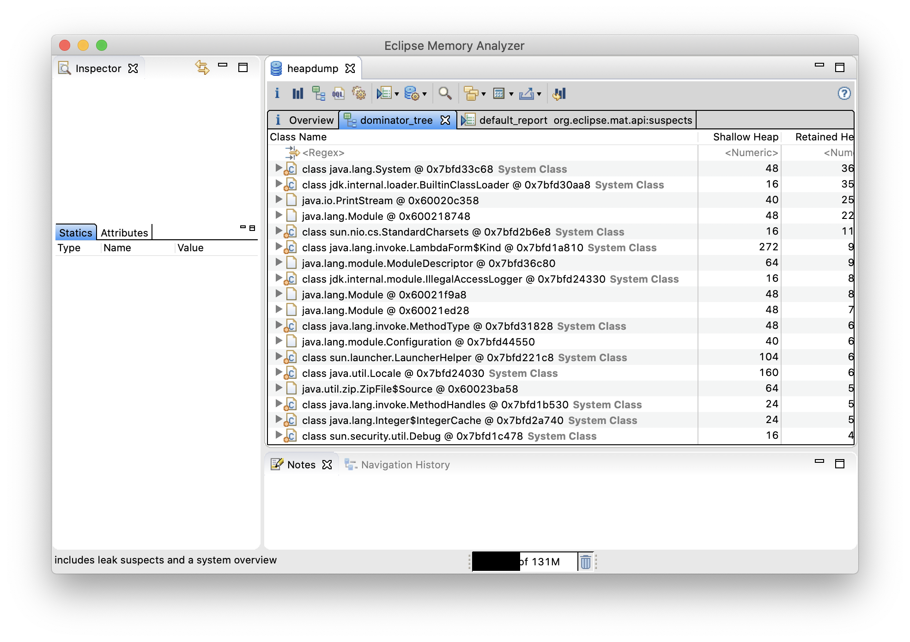

JDK comes with a bunch of handy tools. It’s good to
know about them. In this post we will take a look at
jps, jstack, jmap and jhat.
jps
jps is a JVM counterpart to unix ps command.
By default jps prints process PID and
the name of the main class
or the name of a jar file if the
application was started using java -jar option.
$ jps
54177 Jps
54173 App
54452 app.jarBut it can be more talkative.
-l option adds a package name to the
main class name and a full/relative path to the jar filename.
-m option will print command line arguments passed to the program.
$ jps -lm
54355 pl.marcinchwedczuk.app.App arg1 arg2 arg3
54452 build/libs/app.jar arg1 arg2 arg3
54458 jdk.jcmd/sun.tools.jps.Jps -lmTo print JVM switches we use -v option:
$ jps -v
54654 app.jar -Xmx32m -Xms32m
54657 Jps -Dapplication.home=... -Xms8m ...jstack
jstack PID can be used to print current stack traces of
all threads running in java process.
You can also print stack traces from a core dump file.
The output of jstack command is often referred to
as a thread dump.
Thread dumps are invaluable resources when it comes to debugging
nasty deadlocks that show up only on the production servers.
On the other hand the number of threads in a serious java application
can be overwhelming. To make the most of thread dumps, you
need to give threads meaningful names. You should give names
(via Thread::setName) at least to the threads that you create
yourself and
you should also supply a “thread naming” ThreadFactory when creating
new thread pools (e.g. newFixedThreadPool(int nThreads, ThreadFactory threadFactory)).
Let’s create a simple app that deadlocks and see what jstack
will print:
public static void main(String[] args) throws InterruptedException {
Lock l1 = new ReentrantLock();
Lock l2 = new ReentrantLock();
var t1 = new Thread(() -> {
Thread.currentThread().setName("AppThread#1");
l1.lock();
try {
Thread.sleep(1000);
} catch (InterruptedException e) {
Thread.currentThread().interrupt();
}
l2.lock();
});
var t2 = new Thread(() -> {
Thread.currentThread().setName("AppThread#2");
l2.lock();
try {
Thread.sleep(1000);
} catch (InterruptedException e) {
Thread.currentThread().interrupt();
}
l1.lock();
});
t1.start(); t2.start();
t1.join(); t2.join();
}EDIT: I was tired when I wrote this code. It will deadlock
both threads
say 99% of time but not always. Instead of sleep I should use
CountDownLatch. I leave the code as it is as I don’t want to regenerate
thread dumps but I wanted to point out this problem.
For readability I had to shorten jstack output.
$ jstack `jps | grep App | cut -d ' ' -f 1`
"main" #1 prio=5 os_prio=31 cpu=46.25ms elapsed=85.17s tid=0x00007fb623810800 nid=0x1803 in Object.wait() [0x000070000027a000]
java.lang.Thread.State: WAITING (on object monitor)
at java.lang.Object.wait(java.base@14.0.1/Native Method)
...
at java.lang.Thread.join(java.base@14.0.1/Thread.java:1371)
at pl.marcinchwedczuk.bzzz.App.main(App.java:37)
"AppThread#1" #13 prio=5 os_prio=31 cpu=1.30ms elapsed=85.12s tid=0x00007fb622031000 nid=0x9b03 waiting on condition [0x00007000014b3000]
java.lang.Thread.State: WAITING (parking)
at jdk.internal.misc.Unsafe.park(java.base@14.0.1/Native Method)
...
at java.util.concurrent.locks.ReentrantLock.lock(java.base@14.0.1/ReentrantLock.java:322)
at pl.marcinchwedczuk.bzzz.App.lambda$main$0(App.java:22)
at pl.marcinchwedczuk.bzzz.App$$Lambda$1/0x0000000800b65840.run(Unknown Source)
at java.lang.Thread.run(java.base@14.0.1/Thread.java:832)
...
Found one Java-level deadlock:
=============================
"AppThread#1":
waiting for ownable synchronizer 0x00000007ffd92998, (a java.util.concurrent.locks.ReentrantLock$NonfairSync),
which is held by "AppThread#2"
"AppThread#2":
waiting for ownable synchronizer 0x00000007ffd92968, (a java.util.concurrent.locks.ReentrantLock$NonfairSync),
which is held by "AppThread#1"
...Notice that JVM was able to detect the deadlock, saving us a hours
of debugging. If you have a heisenbug you may consider running
jstack periodically and searching its output for Found * deadlock lines.
Now let’s see how we can extract thread dumps for a core dump. And for that we need a core dump.
Here I will describe how to make a core dump on macOS 10.15
(this is based on this article)
First we need to execute ulimit -c unlimited in the shell
to remove the file size limit on created core-dump files.
A simple crashing hello world C program can create about 2GB core dump,
Java cores can have sizes of 10GB or more.
Then we need to set appropriate
permissions for /cores directory:
$ sudo chmod 1777 /cores
# Test if we have enough permissions
$ echo 1 > /cores/testTIP: 1 in 1777 is for sticky bit.
If a directory has this bit set then
only the owner of a file contained in that directory
can remove or rename that file.
If we additionally create a file with 700 permissions
then nobody beyond us will be able to change or
remove the file.
Then in the same shell in which we executed ulimit -c unlimited
we have to run a java application and in a new
terminal window we need to send SIGSEGV to that app:
$ kill -SIGSEGV PIDAfter being hit by SIGSEGV Java should crash with a message:
$ java -jar build/libs/bzzz.jar
# A fatal error has been detected by the Java Runtime Environment:
#
# SIGSEGV (0xb) at pc=0x00007fff6f4cfdfa, pid=55303, tid=775
...
# Core dump will be written. Default location: /cores/core.56128
...It may take a while to write 10GB+ file on disk so be patient.
Now for some reason I was not able to take a core dump from
official Oracle distribution of JDK. When I used OpenJDK
build everything worked perfectly. Now when I switched to OpenJDK
I have to use OpenJDKs jstack to analyze the core dump.
$ export PATH=/usr/local/Cellar/openjdk/14.0.1/bin:$PATH
$ jhsdb jstack --core /cores/core.56128 \
--exe /usr/local/Cellar/openjdk/14.0.1/bin/java
"main" #1 prio=5 tid=0x00007fb4c300c000 nid=0x1d03 in Object.wait() [0x00007000027db000]
java.lang.Thread.State: WAITING (on object monitor)
JavaThread state: _thread_blocked
- java.lang.Object.wait(long) @bci=0 (Interpreted frame)
- waiting on <0x000000061fe55d88> (a java.lang.Thread)
- java.lang.Thread.join(long) @bci=72, line=1303 (Interpreted frame)
- locked <0x000000061fe55d88> (a java.lang.Thread)
- java.lang.Thread.join() @bci=2, line=1371 (Interpreted frame)
- pl.marcinchwedczuk.bzzz.App.main(java.lang.String[]) @bci=57, line=37 (Interpreted frame)
...For some reason in OpenJDK 14 the command jstack /path/to/java coredump
did not work. Instead I have to use a new tool introduced in JDK9
called jhsdb. Anyway the result is the same, we managed to
get thread dumps from the core dump. Again the tool was smart enough
to point out the deadlock (not visible on attached listing).
OK lets cleanup our system and revert the settings:
ulimit -c 0, rm /cores/* and sudo chmod 1775 /cores.
jmap
jmap can be used to display various info about
Java process heap. For example we may take a heap
histogram, which tells us number of instances and
total memory size taken per class.
$ jmap -histo $PID | head
No dump file specified
num #instances #bytes class name (module)
-------------------------------------------------------
1: 965 2775128 [I (java.base@14.0.1)
2: 7555 399568 [B (java.base@14.0.1)
3: 7324 175776 java.lang.String (java.base@14.0.1)
4: 1295 160512 java.lang.Class (java.base@14.0.1)
5: 964 88712 [Ljava.lang.Object; (java.base@14.0.1)
6: 1872 59904 java.util.HashMap$Node (java.base@14.0.1)But the real power of jmap lies in its ability
to take heap dumps:
$ jmap -dump:live,format=b,file=heapdump $PID
Dumping heap to /path/to/heapdump ...
Heap dump file created [4264220 bytes in 0.018 secs]Heapdumps can then be comfortably opened and analyzed in tools like Eclipse Memory Analyzer.

Heapdumps can be quite huge, if you want to move them between servers remember to first compress them to speed things up. They also contain sensitive data like AWS access keys and user passwords, so please keep them secure.
TIP: You can also generate heapdumps on
out of memory errors using -XX:+HeapDumpOnOutOfMemoryError JVM switch.
EDIT: Since JDK9 the recommended way of generating heapdumps changed. You may want to see this article on InfoQ.
jhat
Now what if you don’t want/have permissions to install fancy heapdump analyzers?
Not all is lost, we may still use primitive but working jhat.
Run jhat heapdump to start jhat HTTP server with basic
heapdump browser.
EDIT: Unfortunately jhat was removed in JDK9.